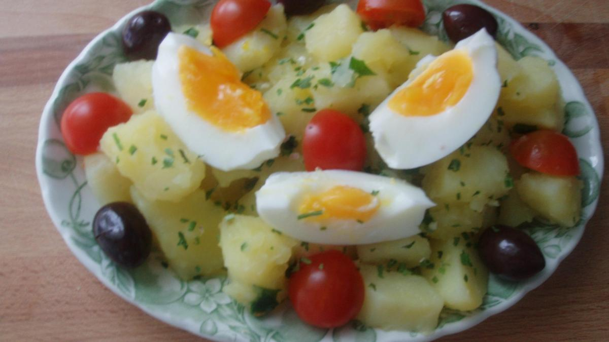
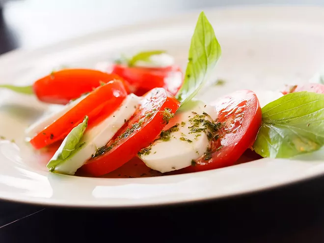
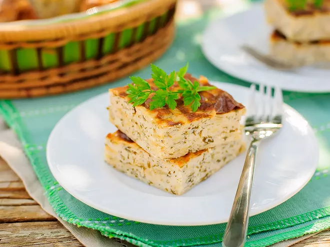

-
Salade de pommes de terre froide

Salade compose de pommes de terres, de salade vertes et de quelques oeufs bouillies
-
Saladetomate-mozzarella au pesto

Une entrée compose principalement de tomates accompagnee de pesto, les deux donnants un gout rafraichissant
-
Cheesecake salé au thon

Ayant l'apparence d'un dessert, il s'agit en realite d'une entre salée faite avec du thon